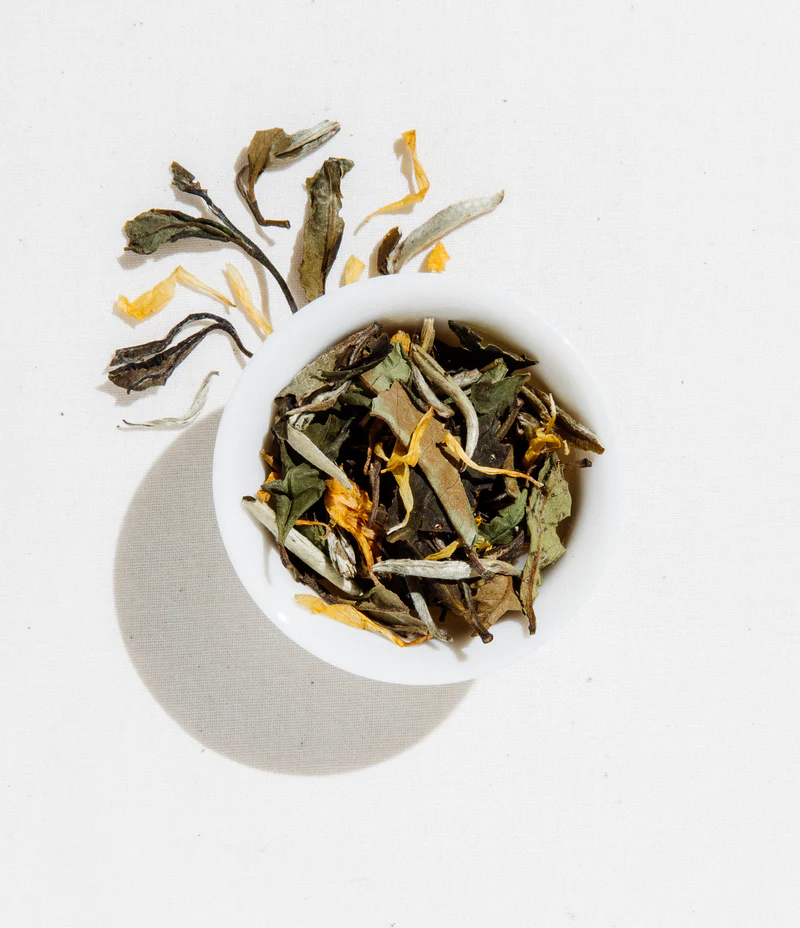
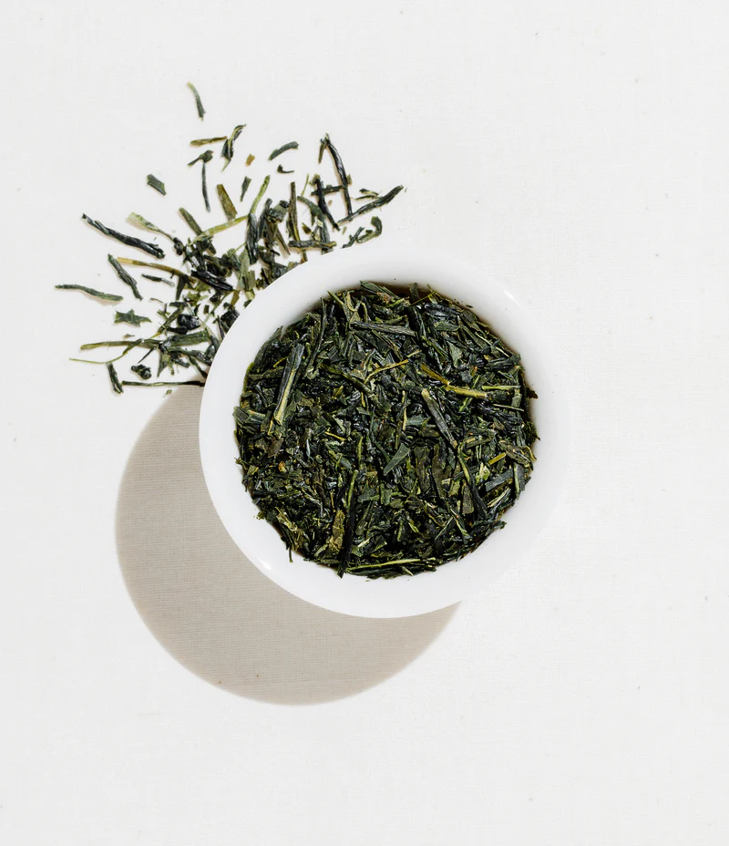
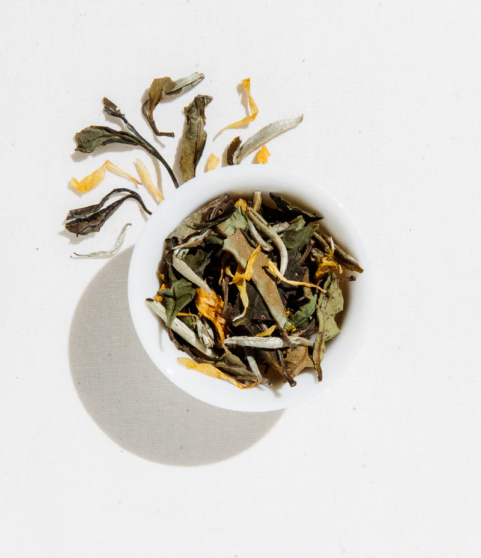
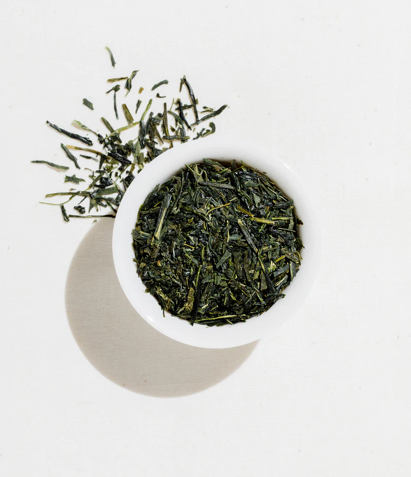
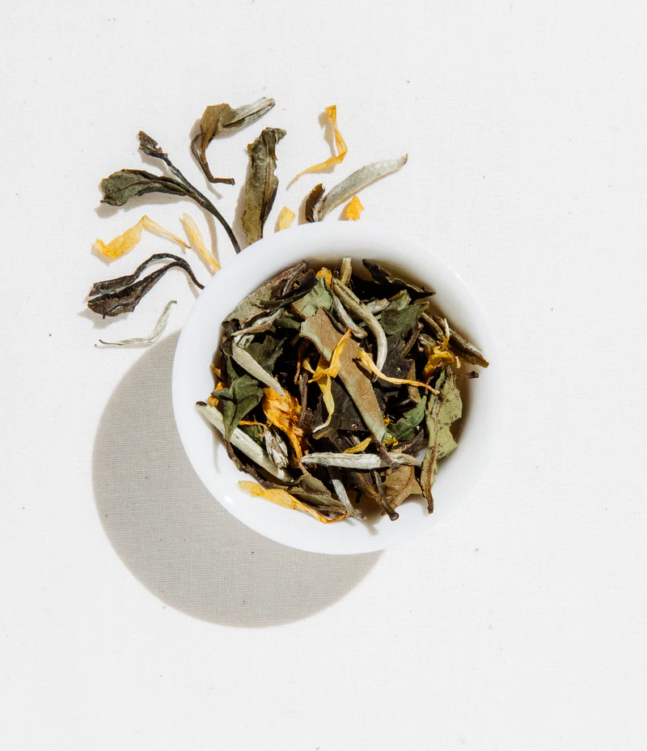
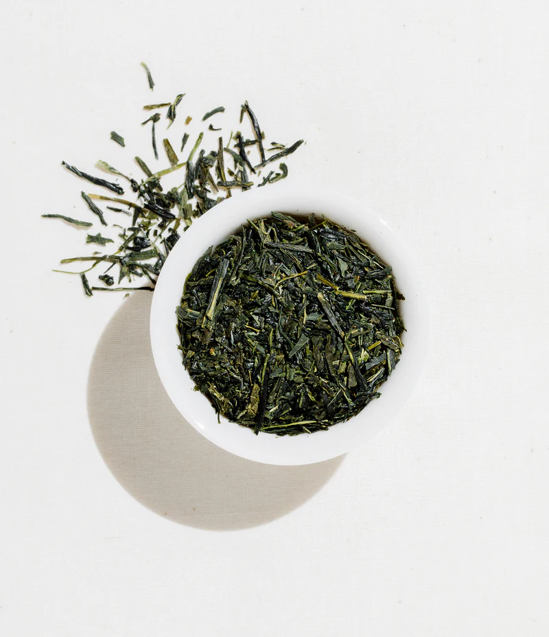

- Our Top Selections -
Black Tea | White Tea | Green Tea
 



Black Tea | White Tea | Green Tea


To create our organic and one-of-a-kind tea blends. Our tea leaves, flowers, herbs, and bark are hand-picked from sustainable farms all over the world.
Numerous studies have found that a variety of teas can boost your immune system, fight inflammation, and even protect you from cancer and heart disease. While some teas have more health benefits than others, there is plenty of evidence that drinking tea on a regular basis can have a long-term impact on your health.
Our mission is to find the world's best organic teas and deliver them to you as sustainably as possible. We are constantly working to improve this process, envisioning a tea leaf that happily moves through its life cycle, creating a healthier world and a healthier you.
Our teas are tastefully prepared to preserve the full-body flavor profiles and aromas of loose-leaf tea